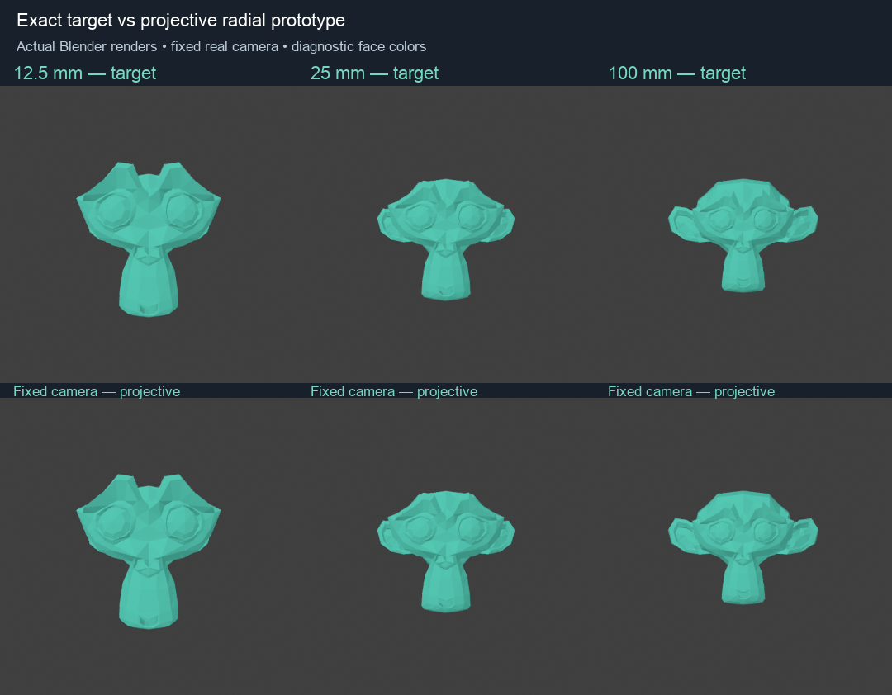
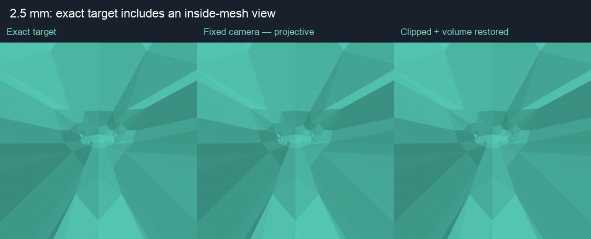
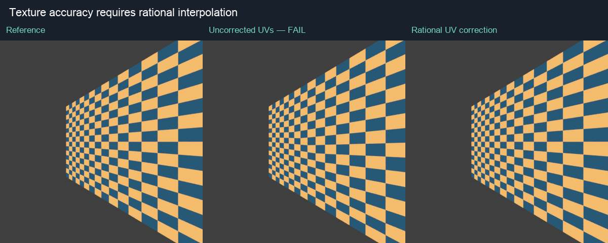

Research, not a shipped fix. Original preview 60d2015 remains installed. The math and retained Geometry Nodes prototype are executable; general clipping, material and companion integration remain open.

The new mapping uses a positive, bounded homogeneous denominator rather than dividing by virtual camera depth. It redistributes front/back size along the exact target rays, conserves the measured total volume and has no quadratic/cubic root selection or identity fallback. Camera position and target framing stay fixed.
All 900 recorded Head view/lens samples pass in double precision and actual Blender 5.2.2 Geometry Nodes. Maximum actual position deviation is 0.00000198 Blender units; maximum relative error in the open-patch signed fan metric is 0.0251%. Thirty-six zero-volume transition probes pass. These are sampled checks, not a proof of all production poses.
The closure anchor moves under the same projective map. Open patches still do not have a unique enclosed physical volume. Closed-mesh volume checks pass separately. Small source volume no longer appears in a denominator; the algebra uses a continuous limiting form.

The full-topology mapping remains finite through the target camera plane, but retains negative target depths. The clipping prototype cuts hidden geometry, caps the test cross-section, and moves the retained surface radially to restore its volume. Its retained vertices are positive-depth; the cap lies below the unchanged near clip plane so it does not become a visible lid.
This preserves the diagnostic target image. That target is already an inside-mesh view under the current fixed-framing model. It does not promise an unclipped whole-character silhouette where the exact target does not have one. Source topology is changed by clipping, and cap/volume validity is only qualified on the stated fixtures.

The uncorrected projective checker differs by 17.94 RGB levels on average (0–255 scale); rational per-corner interpolation reduces that to 0.00068. That shader correction is demonstrated in a disposable fixture only. Existing materials and BVT have not been edited; general texture, normals, lighting, curvature, raycast and scene-occlusion parity are not established. Face-color comparisons alone would have missed this defect.
The 100-node projective kernel takes about 1.9–2.0 ms on 40,962 vertices / 81,920 triangles. The existing full schema15 graph takes about 4.0–4.4 ms on the same mesh. The new fixture omits production falloff, companions and other stages: this is a kernel budget, not a feature-equivalent viewport speedup.
| Input vertices | BMesh clip/cap | Vectorized math | Math + mesh publication |
|---|---|---|---|
| 642 | 1.12 ms | 0.22 ms | 0.45 ms |
| 10,242 | 17.05 ms | 1.22 ms | 3.77 ms |
| 40,962 | 71.78 ms | 3.87 ms | 13.29 ms |
Same final mapping, closed convex test geometry, serial runs. Clipping omits source extraction, parameter preparation, materials, attribute interpolation, downstream modifiers and viewport rendering. The fast prototype rejects unsupported nonconvex/multiple-loop cases. About 14 ms for one dense object is not yet a seven-object real-time solution.
442 paired samples around convex cut events remain finite, positive-depth and volume conserving. A surviving vertex checks global normalization continuity; this is not a rendered or general-topology proof. Total volume conservation does not imply unchanged local thickness, curvature or scene occlusion.
Next: retain edge identities and connectivity between crossing events, use robust orientation tests, support nonconvex and nested cap loops, and preserve rational corner attributes. A specialized plane clipper is the candidate; a general Boolean rebuild is too expensive for the measured budget. Full derivation, contracts and reproduction are in the research notes.
Primary sources: CGAL plane clipping and Shewchuk robust predicates. Our measured costs and mapping are separate project results.
Headless GN execution passed on 4.2.23, 4.3.2, 4.4.3, 4.5.15, 5.0.1, 5.1.2 and 5.2.2. This does not establish Metal/Vulkan/OpenGL viewport or Windows acceptance. Exact-version API/Manual retrieval was attempted but unavailable; compatibility evidence here is installed-runtime execution.
Summary · Actual recorded Head sweep · Dense timing samples · Fast clipping limits · Earlier failed hybrid · Overview
Research sources: PBRT: projective cameras and clipping; PBRT: homogeneous transformations; Stanford: rational texture interpolation. The deformation, volume-conditioning formula and measurements are this project's derivation and tests.